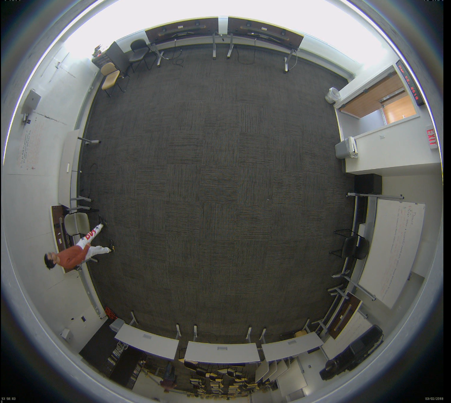
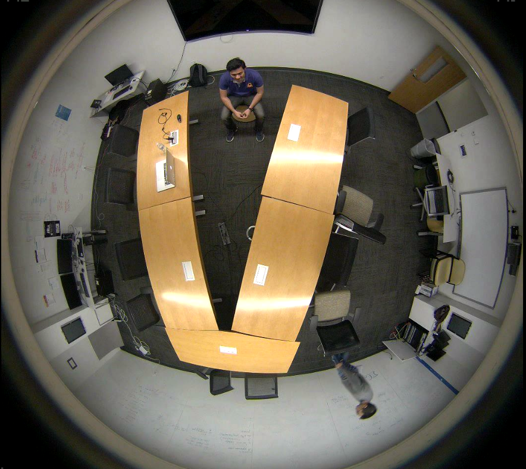
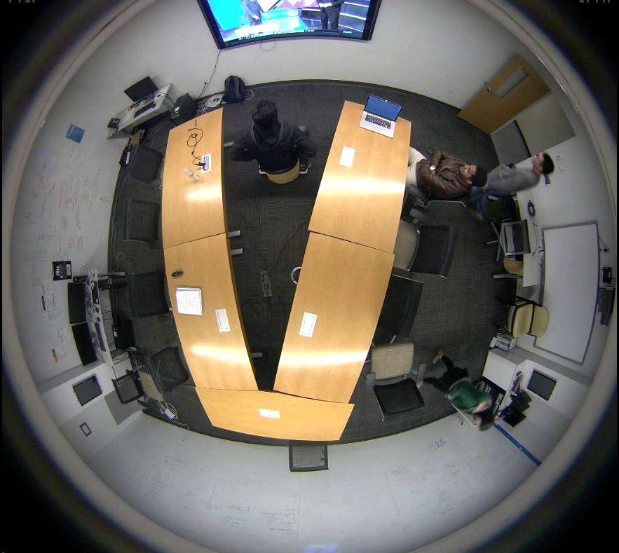
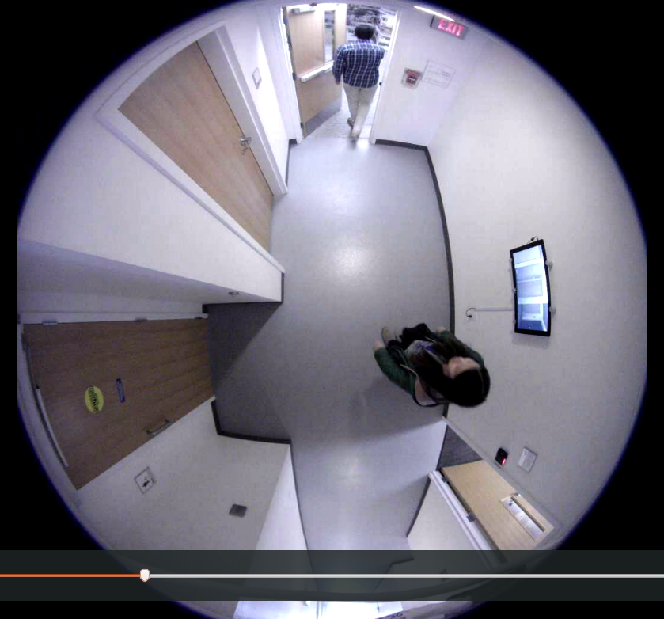
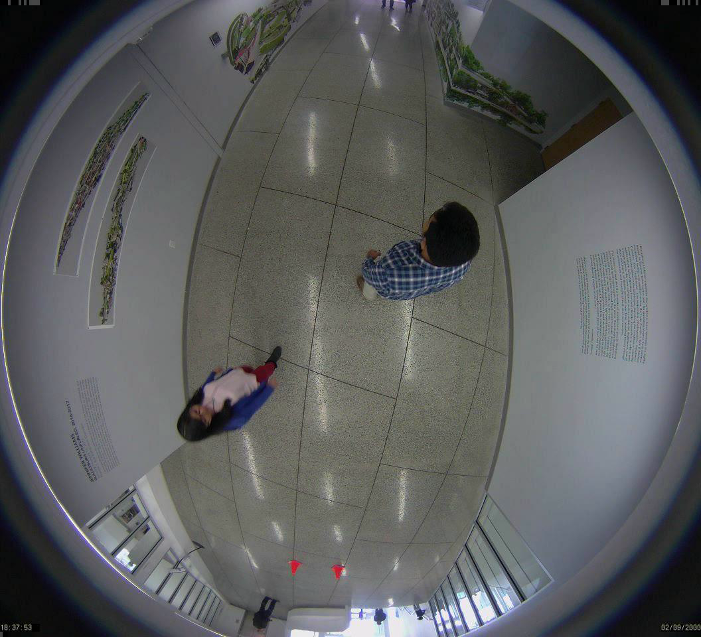
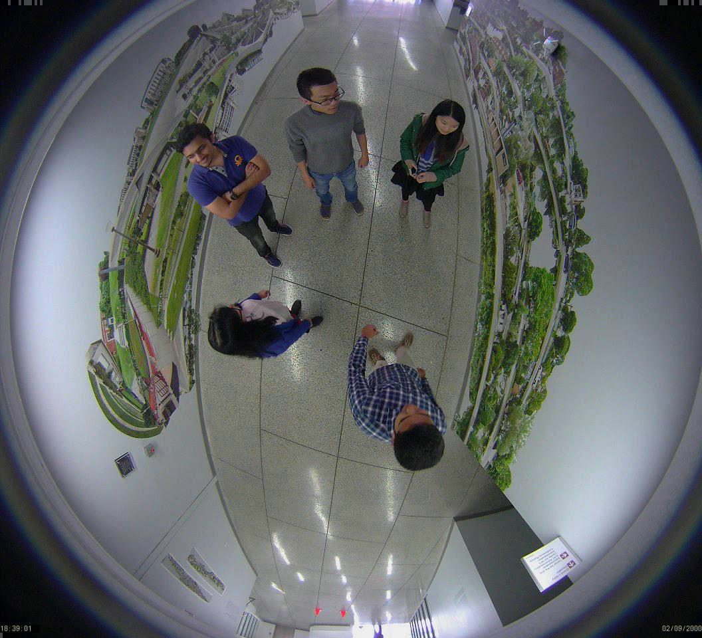
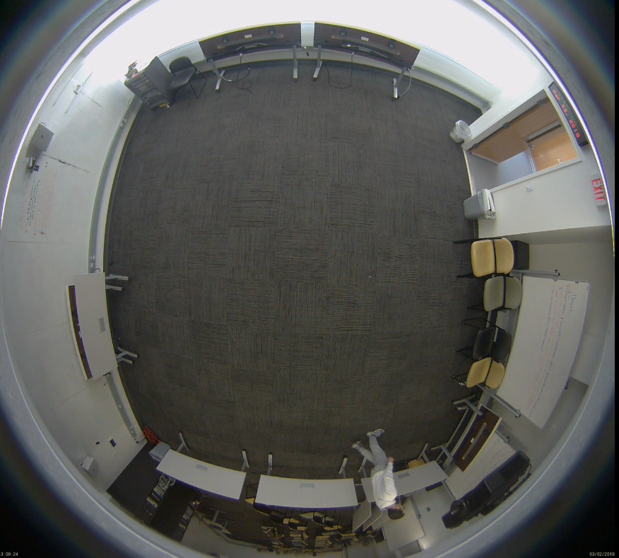
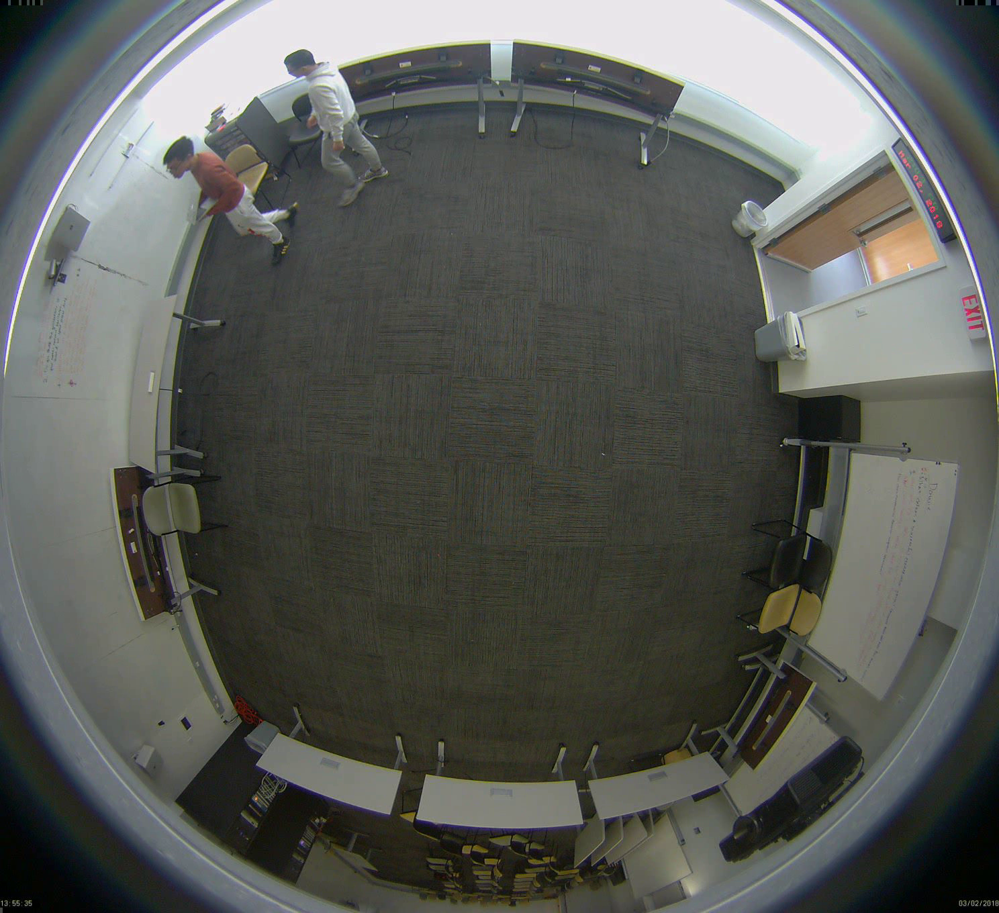

Tracking
This benchmark contains video sequences. We do not provide pre-computed detection. All formats and devkit for evaluation are from 2D MOTChallenge 2015
Explain:FPS is Frames Per second. Resolution is Frame size (w x h). Length is number of frames (length in mm:ss). Tracks
Number of annotated trajectories. Boxes is Total number of annotated pedestrians. Density is Average number of pedestrians per frame.
Train Set
| Sample | Name | FPS | Resolution | Length | Tracks | Boxes | Density | Description | |
| 1 |  | MW-18Mar-2 | 15 | 1056x960 | 2988 (200s) | 2 | 4511 | 1.5 | 2 people walk and sit in a room. Minimal occlusion. Nonlinear movement. |
| 2 |  | MW-18Mar-3 | 15 | 1056x960 | 2121 (141s)) | 3 | 3754 | 1.8 | People walking in hallway. Nonlinear movement. Some occlusion. |
| 3 |  | MW-18Mar-7 | 30 | 1920x1080 | 450 (00:15) | 24 | 6450 | 14.3 | People walking around a large square. |
| 4 | MW-18Mar-8 | 30 | 1920x1080 | 450 (00:15) | 24 | 6450 | 14.3 | People walking around a large square. | |
| 5 |  | MW-18Mar-10 | 30 | 1920x1080 | 450 (00:15) | 24 | 6450 | 14.3 | People walking around a large square. |
| 6 | | MW-18Mar-12 | 30 | 1920x1080 | 450 (00:15) | 24 | 6450 | 14.3 | People walking around a large square. |
| 7 | | MW-18Mar-13 | 30 | 1920x1080 | 450 (00:15) | 24 | 6450 | 14.3 | People walking around a large square. |
| 8 |  | MW-18Mar-14 | 30 | 1920x1080 | 450 (00:15) | 24 | 6450 | 14.3 | People walking around a large square. |
| 9 | MW-18Mar-17 | 30 | 1920x1080 | 450 (00:15) | 24 | 6450 | 14.3 | People walking around a large square. | |
| 10 | MW-18Mar-18 | 30 | 1920x1080 | 450 (00:15) | 24 | 6450 | 14.3 | People walking around a large square. | |
| 11 |  | MW-18Mar-19 | 30 | 1920x1080 | 450 (00:15) | 24 | 6450 | 14.3 | People walking around a large square. |
| 12 |  | MW-18Mar-21 | 30 | 1920x1080 | 450 (00:15) | 24 | 6450 | 14.3 | People walking around a large square. |
| 13 | | MW-18Mar-22 | 30 | 1920x1080 | 450 (00:15) | 24 | 6450 | 14.3 | People walking around a large square. |
| 14 | | MW-18Mar-23 | 30 | 1920x1080 | 450 (00:15) | 24 | 6450 | 14.3 | People walking around a large square. |
| 15 |  | MW-18Mar-24 | 30 | 1920x1080 | 450 (00:15) | 24 | 6450 | 14.3 | People walking around a large square. |
| 16 | MW-18Mar-25 | 30 | 1920x1080 | 450 (00:15) | 24 | 6450 | 14.3 | People walking around a large square. | |
| 17 | MW-18Mar-26 | 30 | 1920x1080 | 450 (00:15) | 24 | 6450 | 14.3 | People walking around a large square. | |
| 18 |  | MW-18Mar-27 | 30 | 1920x1080 | 450 (00:15) | 24 | 6450 | 14.3 | People walking around a large square. |
| 19 |  | MW-18Mar-31 | 30 | 1920x1080 | 450 (00:15) | 24 | 6450 | 14.3 | People walking around a large square. |
| Total | 17757 frm. (744 s.) | 2355 | 564228 | 31.8 |
Test Set
| Sample | Name | FPS | Resolution | Length | Tracks | Boxes | Density | Description | |
| 1 |  | MW-18Mar-1 | 25 | 1920x1080 | 750 (00:30) | 164 | 18483 | 24.6 | Filmed from a bus on a busy intersection |
| 2 |  | MW-18Mar-4 | 30 | 1920x1080 | 450 (00:15) | 24 | 6450 | 14.3 | People walking around a large square. |
| 3 |  | MW-18Mar-5 | 30 | 1920x1080 | 450 (00:15) | 24 | 6450 | 14.3 | People walking around a large square. |
| 4 |  | MW-18Mar-6 | 30 | 1920x1080 | 450 (00:15) | 24 | 6450 | 14.3 | People walking around a large square. |
| 5 | | MW-18Mar-9 | 30 | 1920x1080 | 450 (00:15) | 24 | 6450 | 14.3 | People walking around a large square. |
| 6 | | MW-18Mar-11 | 30 | 1920x1080 | 450 (00:15) | 24 | 6450 | 14.3 | People walking around a large square. |
| 7 | MW-18Mar-15 | 30 | 1920x1080 | 450 (00:15) | 24 | 6450 | 14.3 | People walking around a large square. | |
| 8 | MW-18Mar-16 | 30 | 1920x1080 | 450 (00:15) | 24 | 6450 | 14.3 | People walking around a large square. | |
| 9 | MW-18Mar-20 | 30 | 1920x1080 | 450 (00:15) | 24 | 6450 | 14.3 | People walking around a large square. | |
| 10 | MW-18Mar-28 | 30 | 1920x1080 | 450 (00:15) | 24 | 6450 | 14.3 | People walking around a large square. | |
| 11 | MW-18Mar-29 | 30 | 1920x1080 | 450 (00:15) | 24 | 6450 | 14.3 | People walking around a large square. | |
| 12 | | MW-18Mar-30 | 30 | 1920x1080 | 450 (00:15) | 24 | 6450 | 14.3 | People walking around a large square. |
| Total | 17757 frm. (744 s.) | 2355 | 564228 | 31.8 |